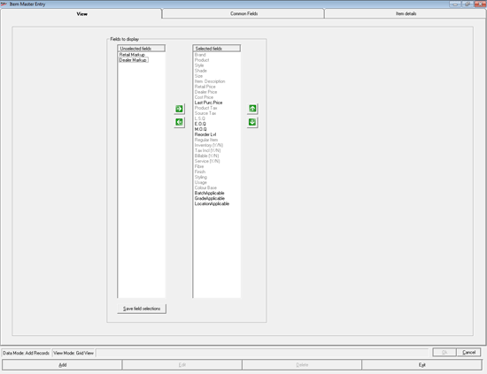
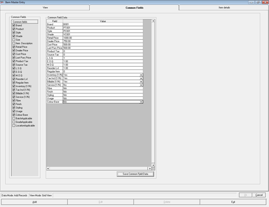
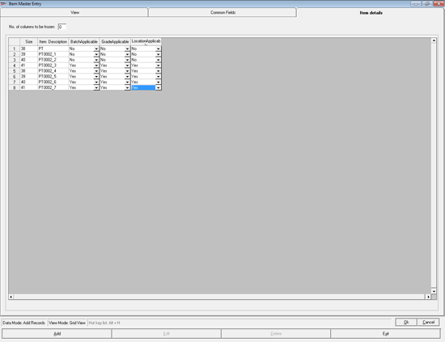
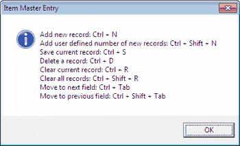
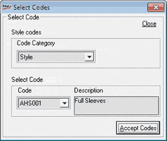

Stock number can either be auto generated or manually entered while adding a new item. This can be configured after installation. The default is to auto generate the stock number as an eight digit running serial number and is prefixed with 0 to ensure the length. You can also set the pattern of stock number. Choosing auto generation or manual entry is a one time setting.
The Item Master Entry window is as shown.

You can enter details of one or multiple items. You can use cut/ copy and paste to fill the columns. If the records are available in MS-Excel sheet, with the same order of the fields, then the whole data can be copied and pasted into this grid.
Fields to display: Select the fields to be displayed for capturing item details.
Unselected fields: Displays the fields that are not selected for data entry.
Note: If Batch / Grade / Location are enabled for specific item classification then the corresponding fields will be displayed under Unselected fields. Select the required fields to be displayed for capturing item details.
Selected fields: Displays the fields that are currently selected for data entry. This list is based on the values selected during installation or on the settings you have chosen on this window and saved earlier. Mandatory fields are displayed in gray and these cannot be removed from the selected list and cannot skip entering values in these field.
Note: If required, additional columns can be configured as mandatory using templates, as part of installation.
In Unselected fields click to select the fields you want to add for data capturing. Multiple selections are possible. Click  to move the selected fields to the Selected fields list. You can use
to move the selected fields to the Selected fields list. You can use  to remove the field names from the Selected fields list. You can rearrange the order of the fields in the Selected fields list using
to remove the field names from the Selected fields list. You can rearrange the order of the fields in the Selected fields list using  and
and  .
.
Save field selections: Click to save the selections you made. If you do not save the selections, the fields list will be available only for the current session. Even if you save these selections, they can be changed in subsequent sessions, if required.
Click Common Fields to display the tab. Alternatively, press Alt+2. The Common Fields tab is as shown.

Common Fields: All the fields under Selected fields in the View tab are displayed here. Select the fields you want to treat as common fields during data entry. Data entry for the fields selected here need to be done only once for a session.
Common Field Data: The selected common field names are displayed in the grid. Enter data for the common fields.
Save Common Field Data: Click to save the common data you have entered. If you do not save the data, it will be available only for the current session. Even if you save these values, they can be changed in subsequent sessions, if required.
Click Item details to display the tab. Alternatively, press Alt+3. The Item details tab is as shown.

No. of columns to be frozen: Enter the number of columns at the left end to be visible in the grid always. Value can be between zero and six. This is useful only when the grid has many columns that are not visible by default.
Enter the details of as many items as required.
Note: If Retail Markup and Dealer Markup are specified either in item classification or in item master, Retail Price and Dealer Price are computed based on Cost Price and displayed in the grid. You may edit these values, if required.
Tip: In Item details tab, press Alt+H to display the list of shortcut keys that can be used in Item Master Entry.

Note:
1. You can browse through the tabs and make changes, if required. Either click the corresponding tab name or press Alt+1 for View, Alt+2 for Common Fields and Alt+3 for Item details.
2. During data entry, if you want to choose any field value that is already catalogued, press F2. The Select Codes window will be displayed, a sample of which is shown below.

Make necessary selections and click Accept Codes.
Note: The field selections and common field data would be saved, if you have chosen to save those details, even if the data entered on Item details tab is not saved.
{kind=link}